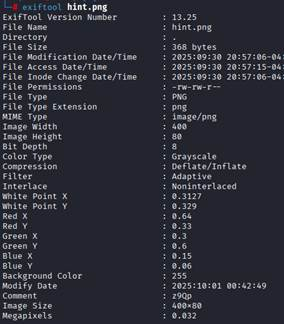
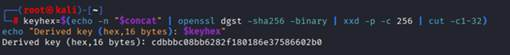
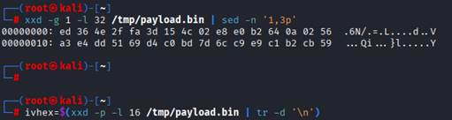
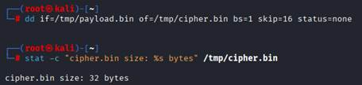

|
Pyramid (2) _find split fragment and decryption |
|
è http://192.168.16.36/the_architect_of_the_Great_Pyramid/ 으로 접속 힌트로 fragment 3가지가 있고 이걸 조합하는 방법 그리고 그 위치가 적혀있음 ============================================================
1. Fragment1을 찾기 위해 View page source를 보면 è Xv9A를 확인할 수 있음
============================================================= 2. Fragment2를 찾기 위해 http://192.168.16.36/the_architect_of_the_Great_Pyramid/assets/script.js 로 접속 è MuS7이라는 hex 힌트가 있음 ============================================================= 3. Fragment3을 찾기 위해 http://192.168.16.36/the_architect_of_the_Great_Pyramid/assets/hint.png로 접속하면
è 아무것도 없음 그래서 우리는 얘를 kali로 옮겨서 확인을 해보자. |
|
è 첫 페이지에서 metadata는 사실을 알려주었다. 그런데 사진에 아무것도 보이지 않음 è 그래서 우리는 데이터 이미지를 저장하고 hint.png에 숨겨진 것을 찾아보자 è Metadata 관련한 대표적인 tool이 exiftool 이다.  è Comment 부분에 의심이 되는 ‘z9Qp’ 가 있다. ============================================================
4. 이제 모아놓은 fragment 값을 합한다.
============================================================= 5. the_architect_of_the_Great_Pyramid/ 페이지 하단에 암호화 복호화 관련 내용 기술  keyhex=$(echo -n "$concat" | openssl dgst -sha256 -binary | xxd -p -c 256 | cut -c1-32) echo "Derived key (hex,16 bytes): $keyhex" è key를 획득한 모습을 볼 수 있음. 6. 암호문 base64 얻기
============================================================= 7. 암호문을 복호화하는 과정을 진행 (전체과정에 payload를 활용해보는 것) +어려워 보이지만 사이버셰프와 같은 도구 활용시 빨리 풀림 + 7-1. b64를 디코드하는 과정
echo -n "$b64" | base64 -d > /tmp/payload.bin # $b64(헤더 없는 base64 문자열)를 디코드하여 바이너리로 /tmp/payload.bin에 저장 ls -l /tmp/payload.bin # 파일이 생성되었는지와 권한/크기 등 간단한 정보를 출력
7-2. IV 값 구하기 (payload 요소)  xxd -g 1 -l 32 /tmp/payload.bin | sed -n '1,3p' # payload 시작부분(최대 32바이트)을 헥스+ASCII 형식으로 출력하여 IV 위치 등 확인 ivhex=$(xxd -p -l 16 /tmp/payload.bin | tr -d '\n') # payload의 첫 16바이트를 연속된 hex문자열로 추출하고 개행 제거하여 ivhex에 저장
7-3. 암호문 추출 및 크기 검증  dd if=/tmp/payload.bin of=/tmp/cipher.bin bs=1 skip=16 status=none # 파일의 앞 16바이트를 건너뛰고 나머지를 /tmp/cipher.bin으로 복사 (바이트 단위)
stat -c "cipher.bin size: %s bytes" /tmp/cipher.bin # 생성된 cipher.bin의 크기를 출력하여 기대 크기인지 확인
7-4. 복호화 openssl enc -d -aes-128-cbc -in /tmp/cipher.bin -K "$keyhex" -iv "$ivhex" -out /tmp/plain.txt 2>/tmp/openssl.err || true # openssl을 통해서 AES-128-CBC 복호화 시도 # true 스크립트에 실패해도 중단 되는 것을 막는 용도 7-5. 평문(pw)을 출력
echo "Decrypted (text):" # 복호화된 파일을 텍스트 형태로 먼저 출력하겠다고 표시
cat /tmp/plain.txt || true è luckforyournext_!21! 라는 결과물을 얻었음 ============================================================= 8. 다음 페이지에 대한 힌트 제공 - 우측하단을 잘 눌러보면 커서의 형태가 바뀌는 부분이 있음 - 그 부분을 클릭하면 힌트가 나옴
|


{kind=link}